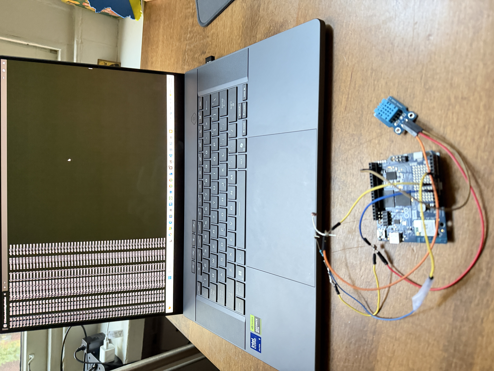
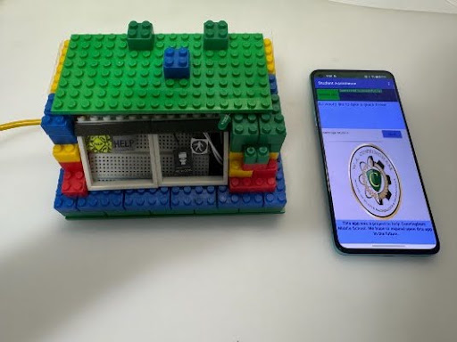

Portfolio
These photos are from my past engineering projects. There's much more to see on my LinkedIn!
-

Arduino project -

Arduino project -
Drone project
These photos are from my past engineering projects. There's much more to see on my LinkedIn!

